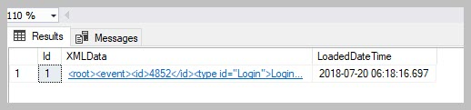
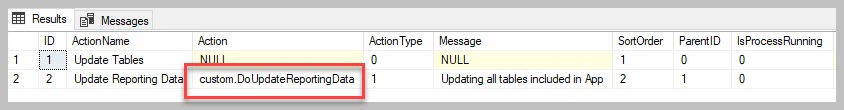

View Files downloaded using the event log¶
This particular use case was focussed on creating a report on when files where downloaded from M-Files and by whom.
Several MFSQL Connector tables and procedures will come into play:
MFEventLog_OpenXML
MFilesEvents
spMFGetMfilesLog
The helper example 17.101.Export and use M-Files event log.sql available in the installation folder is used as a starting point.
Step 1.
Get the event log from M-Files. This procedure will download the current event log into SQL in XML format. Set the @ISClearMFilesLog flag to 1 when the procedure is ready to run in unattended mode and it is included in an SQL agent job.
EXEC [dbo].[spMFGetMfilesLog] @IsClearMfilesLog = 0, -- bit select 1 to delete the log in M-Files
@Debug = 0 -- small
The raw XML export result is in MFEventlog_OpenXML. It is likely that your SSMS browser will complain when you try to view it. It is also not very useful to view in this format.

Rather use the table MFilesEvents. This table is automatically updated when spMFGetMfilesLog is executed. The table show a listing of each event, with the event detail as an XML file in the Events column.

All the downloaded files can be isolate by selecting only events where type is ‘File downloaded’
SELECT * FROM [dbo].[MFilesEvents] AS [mfe] WHERE [type] = 'File downloaded'
An example of a XML record for a file download event is below. the XML record will be different for each type of event.
<event>
<id>4314</id>
<type id="FileAccessed">File downloaded</type>
<category id="1">FileAccess</category>
<timestamp>2018-01-27 06:01:59.778000000</timestamp>
<causedbyuser loginaccount="Admin" />
<data>
<objectversion>
<objver>
<objtype id="0">Document</objtype>
<objid>477</objid>
<version>3</version>
</objver>
<extid extidstatus="Internal">477</extid>
<objectguid>{3FAD8281-5A22-42E6-8438-54997C5B0233}</objectguid>
<versionguid>{B3C69255-9567-430D-821B-A31DBC4FCFDE}</versionguid>
<objectflags value="64">
<objectflag id="64">normal</objectflag>
</objectflags>
<originalobjid>
<vault>{C840BE1A-5B47-4AC0-8EF7-835C166C8E24}</vault>
<objtype>0</objtype>
<id>477</id>
</originalobjid>
<title>Reseller Agreement - DAT Sports & Entertainment (11/2000)</title>
<displayid>477</displayid>
</objectversion>
<filename>Reseller Agreement - DAT Sports & Entertainment (11_2000).pdf</filename>
</data>
</event>
Extracting the XML values into a temporary table and join it with other tables to prepare the reporting data to show when the user has downloaded the file. The XML part of the statement will different, depending on the type of event.
SELECT [me].[ID],
[me].[Category],
[me].[Type],
[me].[CausedByUser],
[ml].[FullName],
[ml].[EmailAddress],
[me].[TimeStamp],
[me].[Events].[value]('(/event/data/objectversion/title)[1]', 'varchar(100)') AS [NameOrTitle],
[me].[Events].[value]('(/event/data/filename)[1]', 'varchar(100)') AS [FileName],
[me].[Events].[value]('(/event/data/objectversion/objver/objtype/@id)[1]', 'varchar(100)') AS [ObjectType_ID],
[me].[Events].[value]('(/event/data/objectversion/objver/objtype)[1]', 'varchar(100)') AS [ObjectType],
[me].[Events].[value]('(/event/data/objectversion/objver/objid)[1]', 'varchar(100)') AS [Objid]
FROM [dbo].[MFilesEvents] [me]
LEFT JOIN [dbo].[MFLoginAccount] AS [ml]
ON [ml].[AccountName] = [me].[CausedByUser]
LEFT JOIN [dbo].[MFUserAccount] AS [mua]
ON [ml].[MFID] = [mua].[UserID]
WHERE [me].[Category] IN ( 'FileAccess', 'PublicLink' )
ORDER BY [me].[TimeStamp] DESC
Various categories and types apply to file download operations. Include these in the filter of the statement.
Type |
Category |
|---|---|
Public link created Public link accessed File downloaded via public link File downloaded |
PublicLink PublicLink FileAccess FileAccess |
Example of extract based on the statement above